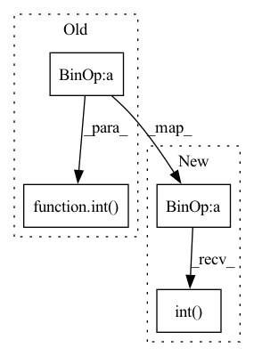

Pattern ID :33187
Before Change
return tuple(self.pixelscale * (1 + np.flip(np.array(self.psf.shape))) / 2)
@property
def psf_border_int(self):
return tuple(int( pb) for pb in ((1 + np.flip(np.array(self.psf.shape))) / 2))
def set_variance(self, variance):
if variance is None:After Change
return self.pixelscale * (1 + torch.flip(self.psf.shape, (0,))) / 2
@property
def psf_border_int(self):
return ((1 + torch.flip(self.psf.shape, (0,))) / 2).int()
def set_variance(self, variance):
if variance is None:
self._variance = NoneIn pattern: SUPERPATTERN
Frequency: 3
Non-data size: 4
Instances Fragment ID: 95884085
Project Name: connorstoneastro/autoprof
Commit Name: eeae70c1e975ecf470e2e371c928796d77f29402
Time: 2022-11-28
Author: connorstone628@gmail.com
File Name: autoprof/image/target_image.py
M Class Name: Target_Image
N Class Name: Target_Image
M Method Name: psf_border_int(1)
N Method Name: psf_border_int(1)
M Parent Class: BaseImage
N Parent Class: BaseImage
M File Name: autoprof/image/target_image.py
N File Name: autoprof/image/target_image.py
M Start Line: 49
M End Line: 49
N Start Line: 49
N End Line: 49
Before Change
def __init__(self, pixelscale = None, data = None, window = None, **kwargs):
assert not (data is None and window is None)
if data is None:
data = torch.zeros(tuple(int( s) for s in np.flip(np.round(window.shape/ pixelscale))))
super().__init__(data = data, pixelscale = pixelscale, window = window, **kwargs)
def clear_image(self):After Change
def __init__(self, pixelscale = None, data = None, window = None, **kwargs):
assert not (data is None and window is None)
if data is None:
data = torch.zeros(tuple(torch.flip(torch.round(window.shape/pixelscale).int() , (0,))), dtype = kwargs.get("dtype", torch.float32), device = kwargs.get("device", "cpu"))
super().__init__(data = data, pixelscale = pixelscale, window = window, **kwargs)
def clear_image(self): Fragment ID: 95884090
Project Name: connorstoneastro/autoprof
Commit Name: eeae70c1e975ecf470e2e371c928796d77f29402
Time: 2022-11-28
Author: connorstone628@gmail.com
File Name: autoprof/image/model_image.py
M Class Name: Model_Image
N Class Name: Model_Image
M Method Name: __init__(4)
N Method Name: __init__(4)
M Parent Class: BaseImage
N Parent Class: BaseImage
M File Name: autoprof/image/model_image.py
N File Name: autoprof/image/model_image.py
M Start Line: 18
M End Line: 18
N Start Line: 18
N End Line: 18
Before Change
if exists(mask):
logits = logits.masked_fill(~mask, -torch.finfo(logits.dtype).max)
num_keep = max(1, int( (1 - dropout) * n) )
keep_indices = logits.topk(num_keep, dim = 1).indices
batch_indices = torch.arange(b, device = device)After Change
if exists(mask):
logits = logits.masked_fill(~mask, -torch.finfo(logits.dtype).max)
keep_prob = 1. - dropout
num_keep = max(1, int(keep_prob * n))
keep_indices = logits.topk(num_keep, dim = 1).indices
batch_indices = torch.arange(b, device = device)
batch_indices = rearrange(batch_indices, "b -> b 1")
seq = seq[batch_indices, keep_indices]
if exists(mask):
seq_counts = mask.sum(dim = -1)
seq_keep_counts = torch.ceil(seq_counts * keep_prob).int()
keep_mask = torch.arange(num_keep, device = device) < rearrange(seq_keep_counts, "b -> b 1")
mask = mask[batch_indices, keep_indices] & keep_mask
Fragment ID: 95884089
Project Name: lucidrains/perceiver-pytorch
Commit Name: c8c5f5721520460369a66b8a0e9c5147df4a883e
Time: 2022-12-04
Author: lucidrains@gmail.com
File Name: perceiver_pytorch/perceiver_io.py
M Class Name: AnonimousClass
N Class Name: AnonimousClass
M Method Name: dropout_seq(3)
N Method Name: dropout_seq(3)
M Parent Class:
N Parent Class:
M File Name: perceiver_pytorch/perceiver_io.py
N File Name: perceiver_pytorch/perceiver_io.py
M Start Line: 40
M End Line: 51
N Start Line: 40
N End Line: 56